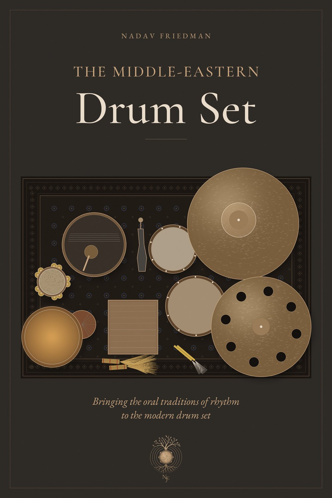
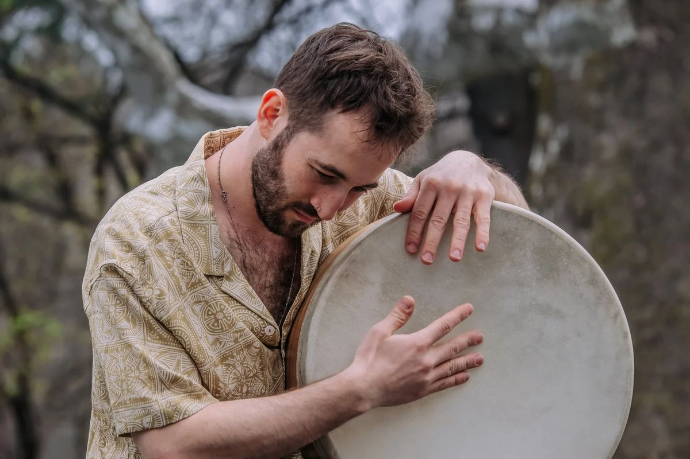

השיטה
מערכת התופים נולדה כדי לרכז קבוצה שלמה של נגני כלי הקשה בנגן אחד. השיטה של נדב מחזירה את הרעיון הזה לשורשיו, ומביאה אל המערכת המודרנית את המקצבים, הטכניקות וההוראה שבעל-פה של כלי ההקשה מהמזרח התיכון ומצפון אפריקה.
היא נשענת על שלוש אבני בניין שחוזרות שוב ושוב בצורות חדשות. המספרים, מסורת שבעל-פה שנדב למד ממאסטר כלי ההקשה ישי אפטרמן, מחלקים כל מספר משתיים עד שמונה על פני פעמה אחת, כך שחלוקות אי-זוגיות ומשקלים מורכבים הופכים לטבע שני. מקצבים מזרח-תיכוניים מעבירים את הדום והטק של הדרבוקה אל הבס והסנר. עצמאות הופכת את ארבע הגפיים ליתרון, ומגיעה עד גרובים שמכנסים הרכבי כלי הקשה שלמים לתוך מערכת אחת.
בשיעורים חוקרים את אותן אבני בניין גם על הדרבוקה, תוף המסגרת והריק, לא רק על מערכת התופים, והן נפגשות במערך המשלב כלי הקשה ידניים עם מערכת התופים: סאונד מודרני שמאחוריו עומק המסורת, שמרגיש בבית בהרכב מזרח-תיכוני, בלהקת ג׳אז או על במת פופ.
ללמוד עם נדב
שיעורים פרטיים
כלי הקשה מהמזרח התיכון ומערכת תופים, בסטודיו הפרטי של נדב בנווה שלום או אונליין. אין צורך בניסיון קודם. עשר שנות הוראה, משיעורים ראשונים ועד רסיטלים בקונסרבטוריון ומבחני קבלה לאוניברסיטה.
לבחירת מועדכיתות אמן
יצירתיות ריתמית ומקצבים מזרח-תיכוניים לתזמורות, למכללות, למגמות מוזיקה בתיכונים ולהרכבים. נדב העביר כיתות אמן בקונסרבטוריון של ניו אינגלנד, בפסטיבל הג׳אז בפנמה, באוניברסיטת בר-אילן ולתזמורת הלאומית של קוסטה ריקה.
להזמנת נדבסדנאות קבוצתיות
תוכנית לימודים מלאה בכלי הקשה לגילים ולרמות שונים, עם מקצבים מישראל, ממרוקו, ממצרים, מטורקיה, ממערב אפריקה, מהודו ומברזיל. נדב מנחה קבוצות קבועות וגם ריטריטים ומפגשים חד-פעמיים.
לפרטים על הקבוצות